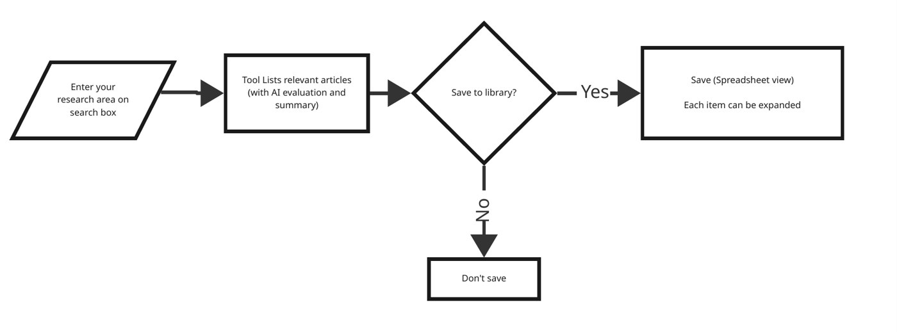
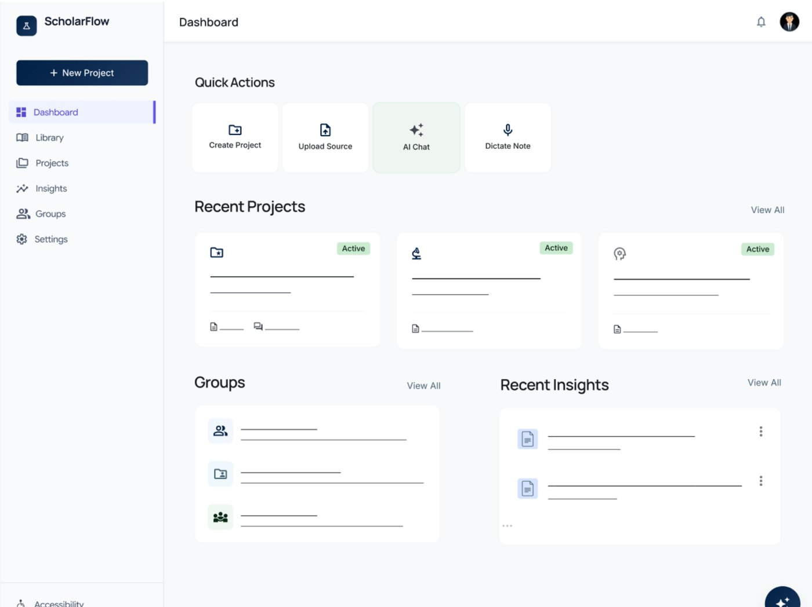
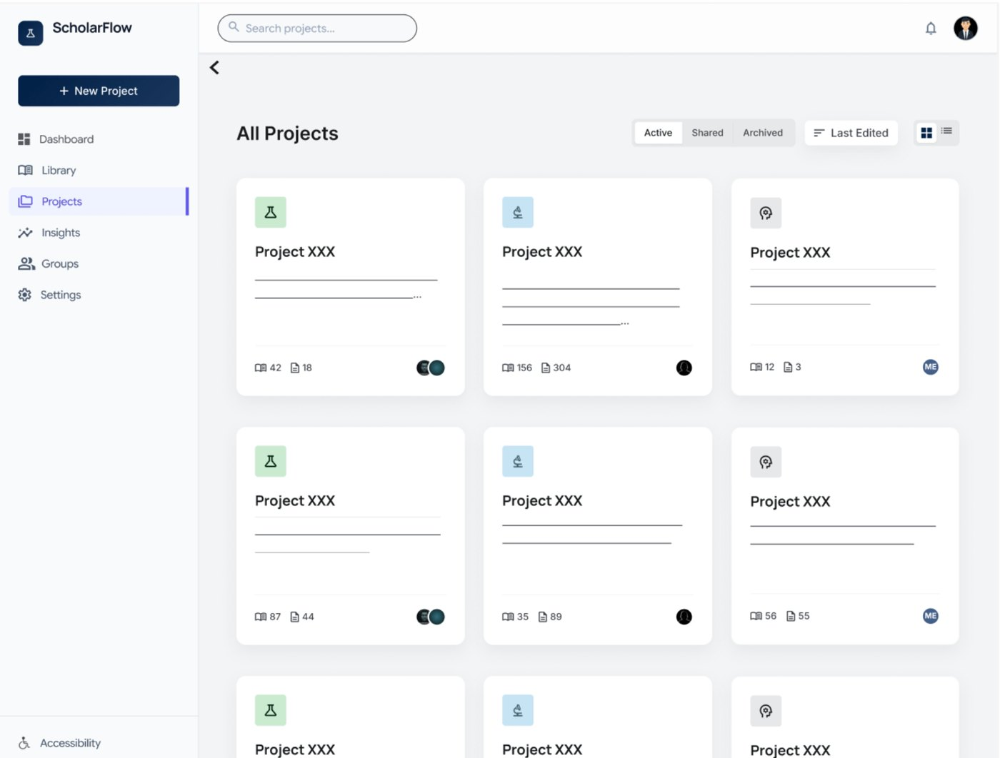

Case study · Design thinking and user research
ScholarFlow
A team design-thinking project on how graduate researchers take notes and manage sources. It ended in a Figma prototype that we tested with three doctoral students.
- Users
- Graduate students and researchers who juggle sources and notes across many tools
- Process
- Design Thinking for Educators, run as a shared Miro board from challenge to feedback
- My role
- Discovery interviews, usability test sessions and follow-up interviews. Helped design the prototype in Google Stitch and tested it in Figma.
- Tools
- Miro, Google Stitch, Figma, Microsoft Teams
- Context
- Team project, EDUC 6030 Advanced Learning Environments Design, Iowa State University
- Year
- Spring 2026
The challenge
Researchers keep notes in paper notebooks, Word, Google Docs, PDF annotators, Zotero and a growing set of AI tools. None of these brings reading, notes and citations together, and many researchers worry about how AI tools handle their data and whether using them is ethical.
We set out to understand how researchers actually work before designing anything.
Discovery: what researchers told us
I interviewed and observed doctoral students in education technology and applied linguistics. We turned what we heard into point-of-view statements. These came up most:
- Ideas are hard to connect across papers and projects, and notes get buried or lost over time.
- Moving notes between reading, writing and reference tools takes time and attention.
- Some researchers think best on paper, with printed articles, color-coded highlighters and handwritten notes, and want a way to bring that work into digital tools.
- Writing AI prompts in a second language can cause misunderstandings and mental overload, so tools shouldn't depend on complex prompts.
- Multilingual scholars want language support built in.
- Researchers need clear guarantees about data security before they trust an AI tool with their work.
From insights to a concept
We turned the insights into "How might we" questions and voted on them. Three that shaped the concept:
- How might we help users who prefer to take notes on paper transition to digital note-taking?
- How might we provide tools to help non-native English speakers?
- How might we help scholars tell apart the sources they have used and those they haven't in complex lists?
The concept became ScholarFlow, a web app for research projects. Researchers search with keywords, prompts or an uploaded paper and get results with AI summaries and quality flags, such as a seminal paper or a predatory journal. They save the sources they want to a library with a spreadsheet view.

Prototype
We generated first screens with Google Stitch and refined them in Figma. The dashboard puts the most common actions up front: create a project, upload a source, chat with AI or dictate a note.


Usability testing
I ran moderated sessions over Microsoft Teams with three doctoral students in education technology, civil engineering and applied linguistics. One had taken part in discovery and two were new. Participants explored each screen and thought aloud, then answered follow-up interview questions.
We tested whether ScholarFlow would improve their research workflow, make the process easier, feel intuitive and support accessibility.
What I learned as a moderator
Keep
- Asking participants to interpret a screen before explaining it
- Restating their words to confirm what they meant
- Following tangents they raised on their own
Do more
- Asking how often they would use a feature
- Digging into moments when they weren't sure what to do
- Asking them to rank the features they liked
Stop
- Asking abstract questions about ethics in the middle of a task
- Explaining a feature before the participant finished reacting to it